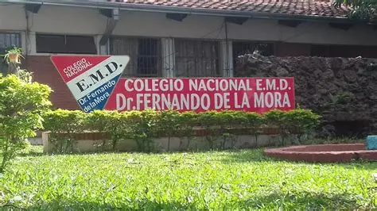

Las personas
detrás del proyecto
Este sitio es un proyecto educativo creado por estudiantes de 3er año de Bachillerato Técnico en Salud, dirigido específicamente a los alumnos y alumnas del colegio.
Colegio Nacional EMD Doctor Fernando de la Mora
El Colegio Nacional de Educación Media Diversificada Doctor Fernando de la Mora es una institución educativa pública que forma a adolescentes y jóvenes en distintas modalidades de bachillerato, incluyendo el Bachillerato Técnico en Salud.
Este proyecto nace desde una de sus aulas con el objetivo de acercar información confiable sobre salud digital y salud mental a la propia comunidad estudiantil, y de dejar un canal claro para pedir ayuda cuando haga falta.
< style="margin-top:1.2rem; font-size:0.78rem; color:var(--muted2);">Editá este párrafo con la reseña oficial de la institución cuando la tengan definida (historia, ubicación, turno, etc.).
Estudiantes


Docentes guía del proyecto
Espacio reservado para las docentes que acompañaron el proyecto.
Si necesitás hablar con alguien sobre tu salud emocional, revisá la pestaña Ayuda: ahí encontrás líneas gratuitas y hospitales públicos disponibles todos los días.